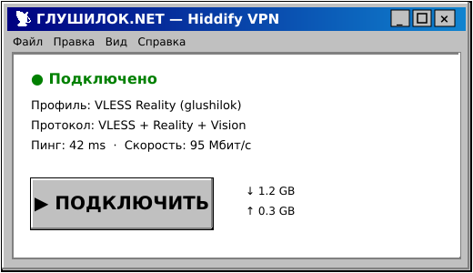
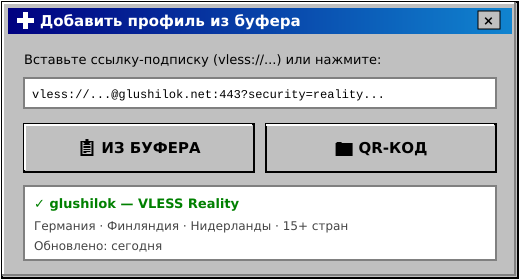

Обход блокировок на iPhone (iOS) в 2026: как открыть YouTube и мессенджеры★彡 iOS · 22 июня 2026 彡★ 
На iPhone обойти блокировки можно так же надёжно, как на Android — нужно лишь правильное приложение с поддержкой VLESS Reality. Рассказываем, что работает на iOS и как открыть YouTube, мессенджеры и Discord на айфоне.  Какие приложения работают на iOS
Главное — выбрать клиент с актуальной поддержкой Reality, иначе соединение не пройдёт через ТСПУ.  Как настроить за пару минутУстановите приложение из App Store, импортируйте ссылку VLESS Reality или подписку (часто через QR-код или буфер обмена), включите профиль — и доступ восстановлен. После подключения откроются YouTube в HD, WhatsApp со звонками, Instagram и Discord. Если App Store недоступенИногда нужные приложения пропадают из российского App Store. Решения: сменить регион учётной записи Apple ID на другую страну, либо настроить обход на роутере, чтобы iPhone выходил через домашний VPN без приложения. Проверить, что заблокировано именно у вас, можно бесплатным тестом Чебурнет Коннект. 

Прокси вернёт Telegram бесплатно, а VPN на VLESS Reality — весь интернет и обходит DPI/ТСПУ. Промокод VNESPISKA = −20% ★ проверь блокировки — тест 
Другие новости |